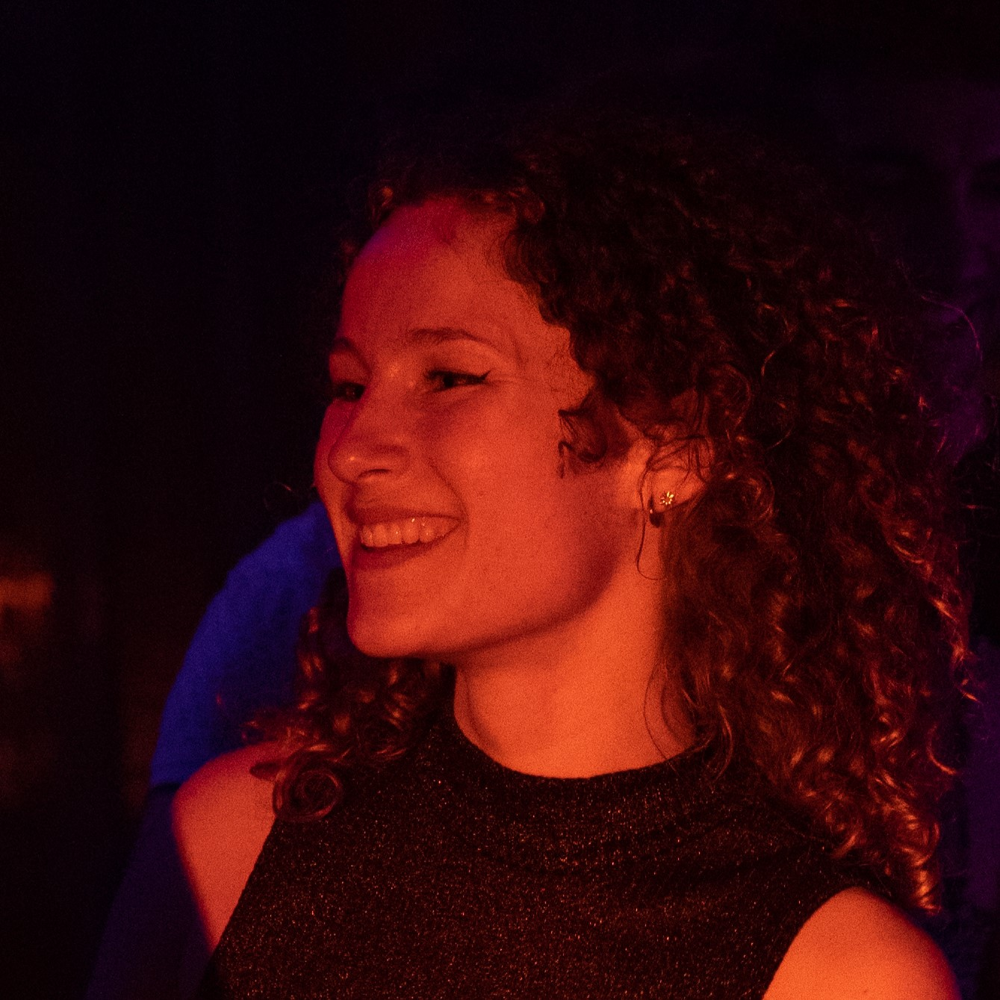

July 2023
Product Manager
Art Director
Unity Developer
Unity
Meta Quest 2
1st place at EUGLOH - ESSIM Summer School 2023
Soft Breathing VR is the second iteration on the Breathing Soft project. This prototype is a virtual guided meditation experience developped in 3 days for the Meta Quest 2 on Unity. After exploring the benefits of conscious breathing and mindefulness with the first version of the prototype, the idea of extending it to a VR application came naturally.
The goal is to offer a moment of peace to any user. As the user puts on the Head-Mounted Display, they enter a peaceful environment. The predominance of the blue color, sounds of nature and a natural environment create a virtual world encouraging relaxation and mindefulness.
August 2020
Creative Director
3D Designer
Unity Developer
Unity
Oculus Quest 1
3rd place at EXPO 2020
Lost in Ikum is a VR horror escape room builded in Unity in 2 weeks during an internship at University. It uses different algorithm of redirected walking to create a virtual walkable surface of 32m² in a room of 11,25m².
The gameplay is as follow. The player wakes up in the very scary computer science building, in the office of his professor he had scheduled a meeting with. By looking around him/her, the player can notice multiple frightening details about the office he/she is in, and a when the professor will come back. The player has to escape the office before the professor returns. He/she has to complete multiple tasks in order to escape.
For this project, the team received the 3rd place at EXPO 2020 in Hamburg. More information about the game as well as the walkthrough of the game including the redirected walking algorithms can be found on the website for the EXPO 2020.
June 2021
3D Designer
Unity Developer
Unity
4th place at AirBus GameJam Hackathon
This project is a 3D game implemented over a week-end for the hackathon by Airbus: Airbus GameJam. The goal was to help employees have better reflexes in case of fire alarm on their workplace.
This project helped us realise the importance of the keeping a design simple. As we wanted to build the game in VR and AR, we added a lot of VR and AR functionalities that were not useful and costed us time. We also had in mind a fun game based on Among Us, but we tried to have a lot of tasks which were because of a lack of time not properly implemented.
Overall, this project has taught us much, firstly it helped us improve our Unity development skills, but also how to keep a design simple for a more enjoyable user experience.
Nov 2020 - Feb 2021
Researcher
Data Analyst
3D Designer
Unity Developer
Unity
R-Studio
Excel
NReal Light Mixed Reality Glasses
Published in IEEE
This research was conducted during COVID-19 to estimate the impact of social facilitation in Augmented reality. The research article was later published at 2022 IEEE Conference on Virtual Reality and 3D User Interfaces.
The biggest challenge we faced during the implementation of the virtual coach was to create the feeling of presence and immersion, of the highest importance in this research field. Part of this included using and adapting lip-syncing algorithm to the german speaking virtual coach.
October 2022
Creative Director
Team manager
Unity Developer
Unity
Pico G2
University Project
VRecycle is an early prototype/POC for a small VR game aiming at teaching users how to recycle trash in a specific region. Builded in a short amount of time, this prototype demonstrates some Unity functionality such as keeping a score, and some VR functionalities such as picking up trash and throwing it into the right bin.
The real challenge for this project was to build a VR game on a device that did not allow live testing. It was a lenghty process that taught me to be patient and to work with the given hardware. Part of the video itelf is a screen recording directly from the device.
January 2023
User Experience researcher
User Interface researcher
Paper
ProtoPie
University Project which led to
an internship position
Cement uses the principles of instrumental interaction and human computer partnership to give the user an all-in-1 powerful tool to create master slides and templates, using only rectangles and cement between them. The user can stretch, modify or even pour the cement onto different shapes and keep the relationship between objects. After the user has created a connection between a few shapes they can reuse the cement and apply it to the whole surface of the new cemented shape or reuse the cemented relationship as an object to connect a few other shapes in the same manner.
The low-fidelity (paper), and high fidelity (ProtoPie) prototypes for each of the principles can be found on the HCI Museum.
This project led to an internship position at LISN (Interdisciplinary Laboratory for Digital Science) to work on a platform for Web2Print designers.
March 2023
Researcher
Designer
Paper
Unity
Figma
University Project
The Jury game is a game based on a questionnaire by two lawyers specialised in sexual violences on the workplace. The idea was inspired by demonstrations of sexism at University. Over 4 months, our team brainstormed on how to tackle the issue of sexism in general.
During the first iteration of this project, we designed a 2D game in Unity, which aimed at being a safe platform for employers and employees at bigger companies to report signs of sexual violence. We faced numerous critics towards our idea as it did not emcompass fully the scope of legal and ethical issues that reporting sexism at the workplace include. Instead we decided to design an educational game to show how the difference between flirting, sexual harrasment, and assault is sometimes difficult to place.
We first researched on the need for such a game by interviewing women about their experience of sexual violence on the workplace and by sending a translated version of the questionnaire to 20 participants (12F). The difference in results showed the need for such a game. We then designed a first paper prototype then a high-fidelity Proof-of-Concept in Figma, which can be seen in the video, and shows the gameplay for only one question.
This project was very challenging and interesting. It helped us to remember to be open to criticism and feedback, and to include them into our many redesigns.
September 2022
Game Developer
Game Designer
Java / Javafx
University Project
A small maze game on the theme of arcade games with different difficulty level and character to pick from, coded for a university project.
Nov 2022 - Jan 2023
Creative Director
Problem Solver
Motivator
Arduino
Servo Motors
Resisting Breathing Band sensor
Exhibition at FabLab UPSaclay
The Breathing Soft is an interactive tangible installation that promotes conscious and mindful breathing. The final design of the installation is a robotic butterfly that flaps its wings in the rhythm of the user's breathing, which is monitored by a breathing sensor. This interactive experience aimed to not only provide a visual representation of the user's breath but also to create an immersive and engaging experience that encourages individuals to focus on their breath and learn techniques to improve it.
The design of a robotic butterfly was chosen as it is an object that can easily capture the attention of visitors and also symbolizes the idea of mindfulness and being present, which aligns with the goal of the project. Through this installation, visitors can take a moment to focus on their breath, learn techniques to improve their breathing, and become more present and aware of their bodies and minds which enhances the overall well-being of individuals.
In this project I wore many hats. From coming up with creative ideas, to motivator for the team, planning and hosting meetings and coming up with solutions to the various technical challenges we faced as a team. In the end, it became an amazing teamwork experience.
Enjoy the meditation video.